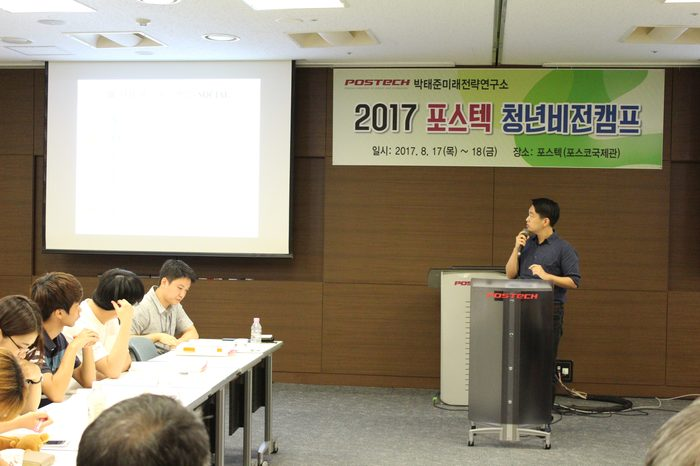

▶ 2017 공모주제: 우리나라 국민들의 시민의식 수준을 진단하고, 보다 성숙한 시민의식 함양을 위한 구체적인 방안을 제시하시오.
Q1. 공모전에 참가하게 된 계기가 무엇인가요?
▷ 수많은 공모전이 존재하지만, 박태준미래전략연구소의 공모전에 참여하게 된 가장 큰 계기는 '성숙한 시민의식'이라는 타이틀에 매료됐기 때문입니다.
우리나라 국민이라면 모두 동감할, 소위 '무한경쟁사회'에서 기업은 물론 국가부처에서도 자기가 수행하는 사업방향에 대한 아이디어를 얻고자 다양한 이들의 생각을 공모하고 있습니다. 물론 '성숙한 시민의식이 무엇이며 그것에 대한 진단과 나아갈 방향'이 미래전략연구소의 취지에 부합하기에 공모전을 개최한 것은 사실일 것입니다.
하지만 공모전 '주최 단체'뿐 아니라 올바른 사회에 관한 고민을 해보는 '개인', 나아가 미래 대한민국 땅에서 삶을 영위할 '후손들'에게까지 긍정적 영향을 미칠 수 있는 아이디어 공모는 흔치 않습니다. 더불어 논문이 아닌, 내 생각을 좀 더 자유롭게 서술할 수 있는 에세이형식이 특이했던 점, 작성분량도 학부생 수준에서 크게 부담되지 않을만큼 적정했던 점 등이 공모전에 참가한 계기라고 할 수 있습니다.
Q2. 에세이라는 다소 낯선 형식과 주제에 접근하기 위해 아이디어를 어떻게 얻으셨나요?
▷ 에세이 형식의 공모전은 흔치 않습니다. 따라서 이전 수상작들이 어떤 형식으로 기술됐는가, 그때 당시의 공모 주제와 각 에세이의 키포인트는 무엇이었는가를 중점적으로 살펴보았습니다. 대상, 최우수상, 그리고 눈길을 끄는 제목을 가진 우수상 몇 작품을 읽어보았습니다. 가장 크게 느낀 것은 에세이 형식이 자유지만 또 그 안에서 나름의 질서정연함과 객관성을 확보해야한다는 점입니다. 따라서 에세이 작성시, 객관성을 갖추기 위해 관련 논문들을 많이 참조했던 것으로 기억합니다.
저는 평소 신문기사와 방송뉴스를 즐깁니다. 오늘은 어떤 일들이 일어났고, 얼마나 큰 사건이었는지를 알 수 있는 일종의 간접체험 수단입니다.
장소적, 시간적으로 산발적으로 일어나는 사건사고 혹은 정치경제적 이슈들은 각각 흩어져있는 것처럼 보입니다. 하지만 잘 살펴보면 저 옛날에 발화됐던 원인이나, 저 멀리서 있었던 사건이 지금 우리 앞에 나타난 일을 설명해주기도 합니다. 이러한 점에서 저는 아이디어를 구상할 때, 구체적으로 한 이슈 (예를 들면 쓰레기 무단투기를 어떻게 해결할 수 있을까?)보다는 거시적으로 사회를 바라보고 문제가 무엇인지 진단하고, 나름대로의 해결책을 내보려고 노력했습니다. 미시적 시각은 매우 중요합니다. 하지만 때로는 거시적 시각과 이로 인한 사회적 시스템 구성이 나도모르게 우리 사회를 바른 방향으로 이끌어갈 수 있는 강력한 사고방식이라 생각합니다.
Q3. 작품 설명을 부탁드립니다.
▷ 에세이를 간략하게 설명하자면 다음과 같습니다.
성숙한 시민의식을 함양하기 위한 방법을 찾으려면, 우선 성숙한 시민의식이란 무엇인가부터 알아야 할 것입니다. 이에 대한 실마리로써 송호근교수님이 저서에서 밝히신 시민성에 대한 개념을 끌어왔습니다. 시민성이란, 책무와 권리의식을 동시에 갖춘 균형 감각이며, 사익보다는 공익을 중시하는 윤리성입니다. 이러한 시민성이 우리네 일상생활에서 자연스럽게 발현되기란 쉽지 않을 것입니다. 어떻게 '시민성이 공유되는 사회'를 만들어낼 수 있을까요? 우선 커뮤니케이션 양 주체의 역할이 중요합니다.
우리는 지금껏 '자신의 주장을 표현하는 것'에 익숙하며, 또 그 중요성을 잘 알고 있습니다. 반대로 지금까지 듣는 이가 얼마나 상대방의 주장을 듣고 체화시켜 시민성을 사회저변에 뿌리박게할 수 있는지에 대한 논의가 부족했던 것이 현실입니다. 이에 왜 우리사회 구성원이 귀를 닫게 되었고, 어떻게 다시 그것을 열 수 있을까에 대한 고민에서부터 에세이가 시작됐습니다. 저는 귀 기울이기에 익숙하지 않은 현대 한국사회의 양상을 'CRISIS'(Curiosity, Rigidness in thinking, Indirect communication, Success oriented culture, Impatience, Sidestep from Criticism)라는 6가지 요소로 파악해 보도록 노력했고, 해결방안을 'SOCIAL'(Stimulus, Open minded to probability, Centralized decision making system, Infrastructure for recovery, Accurate measurement, Leverage effect)이라는 6가지로 생각해 보았습니다.
이에 더해 어떻게 하면 SOCIAL이라는 방식이 잘 작동하기 위한 기제로써 '시민성에 대한 우호적 경험'을 제시했습니다.이때, 사회 문제의 해결 바탕에는 사회적 약자도 자신의 목소리를 충분히 낼 수 있는 사회적 분위기가 형성돼야함이 전제인 바, 사회적 강자든 약자든 서로의 입장을 이해하고 존중하는 사회적 분위기를 형성해 나가는 것이 선결과제일 것입니다.
Q4.수상 소감을 말씀해 주세요.
(에세이를 쓰는 것 뿐 아니라 발표 및 토론도 하셨는데요. 어떻게 준비하셨고 소감은 어떤지 적어주세요)
▷에세이 공모전에 참여하시는 분들이 가장 가치있다고 생각하셔야 할 보상은 상금이 아닙니다. 내가 평소에 세상을 바라보는 프레임이 건전한 방향인지, 그리고 현재와 미래세대에 도움이 될 만한 생각인지를 훌륭한 생각을 가진 사람들과 논의하고 피드백을 받는 경험 그 자체입니다. 추후 진정으로 인정받는 사람, 사회에서 꼭 필요한 사람이 된다면 돈은 따라오게 돼있는 것 같습니다. 이러한 점에서 리더십 프로그램과 건설적인 토론 기회 자체가 저는 상당히 인상깊었고 또 기억에 많이 남습니다.
프로그램이 끝난지 며칠 지난 지금 시점에도 계속 그때 맺은 다양한 사람들과의 인연을 곱씹게 되고, 어떤 것이 재미있었는지 회상하게 됩니다. 물론 캠프에 참여하면 새로운 사람들과 재미있는 시간을 보내느라 발표나 토론 준비시간이 촉박할 수도 있습니다. 하지만 발표자 모두가 그랬던 것 같습니다. 따라서 서로 즐거운 감정을 공유하고, 네트워크를 형성하는 경험을 꼭 해보시길 바랍니다.
